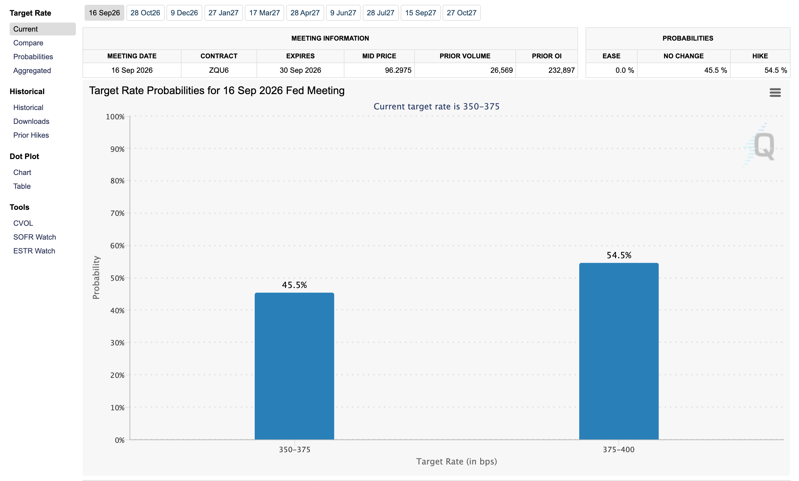
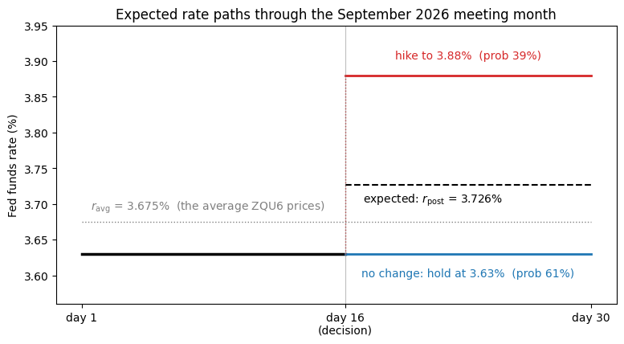
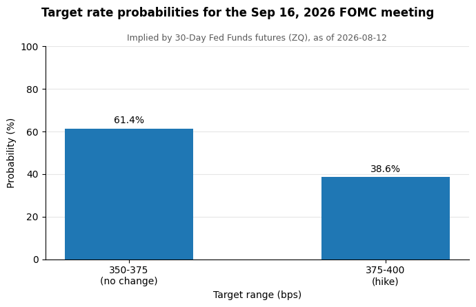

02. Replicating the CME FedWatch Tool#
The CME FedWatch tool publishes the probability of each possible fed funds target range after upcoming FOMC meetings, backed out of 30-Day Fed Funds futures (ZQ) prices. It is one of the most-quoted numbers in financial journalism — “markets price a 58% chance of a hike in September” is FedWatch talking.
This notebook replicates the tool’s simplest case: the next scheduled meeting, with a binary outcome — the Fed either leaves the target range unchanged or moves once by 25 bps. That single case contains all of the economic content; the full tool chains the same logic across later meetings with a probability tree (out of scope here).

The published FedWatch tool for the September 16, 2026 meeting, captured August 6, 2026. By the end of this notebook we will have reproduced this chart from just two inputs: one futures price and one published rate.
From two numbers to a probability#
Recall the settlement rule from notebook 01: the ZQ contract for a month with \(N\) calendar days settles at \(100 - \bar{r}\), where \(\bar{r}\) is the month’s calendar-day average of the effective federal funds rate (EFFR). Before the month is over, the contract trades at the market’s forecast of \(\bar{r}\), so a price \(P\) observed today reveals an expected average rate, \(R = 100 - P = \mathbb{E}[\bar{r}]\). (Strictly a futures price can also embed a risk premium; over the couple of months ahead of a meeting it is small, FedWatch ignores it, and so do we.)
Step 1 — the current rate is published every morning. The pre-meeting rate needs no model at all: the fed funds rate only moves when the FOMC moves it, and the New York Fed publishes each day’s realized EFFR the next morning (we pull it from FRED). That latest print — call it \(r_{\text{pre}}\) — is the rate the market expects to prevail right up to decision day. The published FedWatch tool anchors here too.
Step 2 — the meeting-month contract averages two rates. The decision is announced on day \(d\) of the \(N\)-day meeting month and takes effect the next day, so the month’s average straddles the decision: \(d\) days accrue at the known \(r_{\text{pre}}\), and the remaining \(N - d\) days accrue at the post-meeting rate \(\tilde{r}_{\text{post}}\) — a random variable today, because the meeting hasn’t happened yet. Taking expectations of the average, the contract’s implied rate is a day-weighted blend with exactly one unknown, \(r_{\text{post}} \equiv \mathbb{E}[\tilde{r}_{\text{post}}]\):
Read \(r_{\text{post}}\) carefully: it is an expectation, not a possible outcome. The Fed moves in 25 bp steps, so the realized post-meeting rate will sit on that grid — but its expectation can land anywhere in between, and exactly where it lands is what encodes the probabilities.
Step 3 — an expectation between two outcomes is a probability. Assume the meeting either leaves the target alone or moves it once by 25 bps, in the direction the data suggest:
with \(\Delta = -0.25\) for a cut or \(+0.25\) for a hike. Take the expectation of this two-point distribution:
The expected change is the probability times the step size — so the probability is the expected change measured in units of one step:
The two sanity checks are the intuition: a zero gap means \(p = 0\), a full 25 bp gap means \(p = 1\), and in between \(p\) is how far the expected rate has traveled from “no change” toward “one full move.” (Market noise can push the gap slightly outside \([0, 0.25]\); the code clips \(p\) to \([0,1]\).)
The worked example — against the real tool#
The September 2026 meeting ends September 16, and September has 30 days:
\(d = 16\), \(N = 30\). On August 5, 2026, the EFFR print was
\(r_{\text{pre}} = 3.63\%\) and the September contract ZQU6 closed at
96.30, implying \(r_{\text{avg}} = 3.70\%\). Step 2:
The expected change is \(+15\) bps, so Step 3 gives \(p_{\text{hike}} = 15/25 = 60\%\) and 40% no change.
Notice what the day-weighting accomplished. The naive reading — “September prices 3.70% against 3.63% today, 7 bps is a \(7/25 = 28\%\) hike chance” — is wrong, because a September 16 hike affects only the last 14 of September’s 30 days. The monthly average dilutes the move by \(\tfrac{N-d}{N} = \tfrac{14}{30}\), and Step 2 exists to undo that dilution: \(7 \times \tfrac{30}{14} = 15\) bps — hence 60%, not 28%.
The FedWatch screenshot at the top, captured the next morning, showed 54.5% hike / 45.5% no change — the same call as our 60/40, about six probability points apart. That gap is smaller than it looks: the solve for \(r_{\text{post}}\) amplifies pricing differences by \(N/(N-d) \approx 2.1\), so one basis point in the implied rate moves the probability by roughly nine points. Six points is under a basis point of price — about what official settlements versus daily closes, and an intraday screenshot versus a previous-day close, account for.
Fine print#
Meetings near month-end. Dividing by \(N - d\) amplifies noise by \(N/(N-d)\) — about \(10\times\) for a meeting on day 27. When a meeting falls in the last ~3 days of a month, FedWatch reads the next month’s contract instead, whose whole month accrues at the post-meeting rate;
fedwatch_monitordoes the same.The mornings right after a decision. For a day or two the latest EFFR print predates the new target taking effect, so Step 1’s anchor can be stale;
fedwatch_monitorflags those runs (anchor_stale).Only two outcomes. A meeting that might move 50 bps (March 2020) violates the binary model. The full tool allows richer outcome sets and chains meetings into a probability tree — the single-meeting case here is the atom it is built from.
The same steps on live data#
Load the three inputs: daily ZQ bars, the EFFR series, and the FOMC calendar.
import matplotlib.pyplot as plt
import pandas as pd
import fedwatch
import fedwatch_monitor
import pull_effr
import pull_fed_funds_futures
df = pull_fed_funds_futures.load_fed_funds_futures()
effr = pull_effr.load_effr()
meetings = fedwatch.load_fomc_meetings()
meetings.tail()
| meeting_start | meeting_end | |
|---|---|---|
| 11 | 2026-06-16 | 2026-06-17 |
| 12 | 2026-07-28 | 2026-07-29 |
| 13 | 2026-09-15 | 2026-09-16 |
| 14 | 2026-10-27 | 2026-10-28 |
| 15 | 2026-12-08 | 2026-12-09 |
Steps 1 and 2 inputs. Find the next undecided meeting, take the latest EFFR print as \(r_{\text{pre}}\), and read \(r_{\text{avg}}\) off the meeting-month contract.
as_of = df["date"].max()
meeting_end = fedwatch_monitor.next_undecided_meeting(meetings, as_of)
d, n = meeting_end.day, meeting_end.days_in_month
effr_date, r_pre = fedwatch_monitor.latest_effr(effr, as_of)
latest = fedwatch.latest_prices_by_contract(df)
contract = latest.set_index("contract_month").loc[pd.Period(meeting_end, freq="M")]
r_avg = fedwatch.implied_rate(contract["close"])
print(f"As of {as_of.date()}, the next FOMC decision is {meeting_end.date()}")
print(f"EFFR print for {effr_date.date()} => r_pre = {r_pre:.4f}%")
print(f"{contract['symbol']} close {contract['close']:.4f} => r_avg = {r_avg:.4f}%")
As of 2026-08-12, the next FOMC decision is 2026-09-16
EFFR print for 2026-08-12 => r_pre = 3.6300%
ZQU6 close 96.3250 => r_avg = 3.6750%
Solve and convert. The day-weighted solve gives the expected post-meeting rate; its gap from \(r_{\text{pre}}\), in units of 25 bps, is the probability. The current target range is inferred by snapping \(r_{\text{pre}}\) to the 25 bp grid (EFFR trades inside the Fed’s range, so this is safe).
r_post = fedwatch.solve_post_meeting_rate(r_avg, r_pre, meeting_end)
probs_info = fedwatch.move_probability(r_pre, r_post)
lower, _ = fedwatch.current_target_range(r_pre)
print(
f"Meeting ends day {d} of {n} => "
f"r_post = ({r_avg:.4f}*{n} - {r_pre:.4f}*{d}) / {n - d} = {r_post:.4f}%"
)
print(f"Expected change: {(r_post - r_pre) * 100:+.1f} bps => {probs_info['direction']}")
print(f"Current target range (inferred): {fedwatch.range_label(lower)} bps")
print(
f"P({probs_info['direction']}) = |{r_post:.4f} - {r_pre:.4f}| / 0.25 "
f"= {probs_info['p_move']:.1%}"
)
print(f"P(no change) = {probs_info['p_no_change']:.1%}")
Meeting ends day 16 of 30 => r_post = (3.6750*30 - 3.6300*16) / 14 = 3.7264%
Expected change: +9.6 bps => hike
Current target range (inferred): 350-375 bps
P(hike) = |3.7264 - 3.6300| / 0.25 = 38.6%
P(no change) = 61.4%
The whole argument in one picture#
The rate path is flat at \(r_{\text{pre}}\) through decision day \(d\), then splits into the two outcomes the binary model allows. The dashed line is the expected post-meeting rate from Step 2 — where it sits between the branches is the probability. The dotted line is the one number the contract actually prices: the day-weighted average of the expected path.
sgn = 1.0 if r_post >= r_pre else -1.0
r_moved = r_pre + sgn * 0.25
pad = 0.02
fig, ax = plt.subplots(figsize=(9, 4.5))
ax.plot([1, d], [r_pre, r_pre], color="black", lw=2.5)
ax.plot([d, n], [r_pre, r_pre], color="tab:blue", lw=2)
ax.plot([d, d], [r_pre, r_moved], color="tab:red", lw=1, ls=":")
ax.plot([d, n], [r_moved, r_moved], color="tab:red", lw=2)
ax.hlines(r_post, d, n, color="black", lw=1.5, ls="--")
ax.hlines(r_avg, 1, n, color="gray", lw=1, ls=":")
ax.axvline(d, color="gray", lw=0.8, alpha=0.5)
mid = (d + n) / 2
ax.text(
mid,
r_pre - sgn * pad,
f"no change: hold at {r_pre:.2f}% (prob {probs_info['p_no_change']:.0%})",
color="tab:blue",
ha="center",
va="top" if sgn > 0 else "bottom",
)
ax.text(
mid,
r_moved + sgn * pad,
f"{probs_info['direction']} to {r_moved:.2f}% (prob {probs_info['p_move']:.0%})",
color="tab:red",
ha="center",
va="bottom" if sgn > 0 else "top",
)
ax.text(
d + 1,
r_post - sgn * pad / 2,
f"expected: $r_\\mathrm{{post}}$ = {r_post:.3f}%",
ha="left",
va="top" if sgn > 0 else "bottom",
)
ax.text(
1.5,
r_avg + pad / 2,
f"$r_\\mathrm{{avg}}$ = {r_avg:.3f}% (the average {contract['symbol']} prices)",
color="gray",
ha="left",
va="bottom",
)
ax.set_xticks([1, d, n], ["day 1", f"day {d}\n(decision)", f"day {n}"])
ax.set_ylim(min(r_pre, r_moved) - 0.07, max(r_pre, r_moved) + 0.07)
ax.set_ylabel("Fed funds rate (%)")
ax.set_title(f"Expected rate paths through the {meeting_end:%B %Y} meeting month")
plt.show()

All at once#
fedwatch_monitor.compute_monitor_forecast packages exactly the steps
above, plus the fine-print handling (the month-end contract switch and
the stale-anchor flag). It is what the pipeline’s chart task and the
daily monitor (doit monitor) both call.
summary, probs = fedwatch_monitor.compute_monitor_forecast(df, effr, meetings)
probs
| outcome | target_range | probability | |
|---|---|---|---|
| 0 | 350-375 (no change) | 350-375 | 0.614286 |
| 1 | 375-400 (hike) | 375-400 | 0.385714 |
And the FedWatch-style chart (the pipeline writes this to
_output/fedwatch_latest_forecast.png and an interactive HTML version
for the chartbook site). Compare it with the screenshot at the top —
and remember that if you have refreshed the data since this case study
was written, the numbers will have moved with the market.
from fedwatch_chart import plot_probabilities_matplotlib
ax = plot_probabilities_matplotlib(summary, probs)
plt.show()

Exercises
Recompute the forecast with
as_ofset to the day before the last FOMC meeting (passas_of=tocompute_monitor_forecast). Did the market see the decision coming?Plot
p_moveover time by loopingcompute_monitor_forecastover the as-of dates in the sample. When did the market’s mind change? (This path-over-time view is exactly whatdoit monitoraccumulates in_data/fedwatch_history.parquetgoing forward.)EFFR can only anchor the next meeting: for the meeting after that, the pre-meeting rate is unknown today because it depends on the first decision. Argue that the first meeting’s \(r_{\text{post}}\) is the natural anchor for the second, and use it to extend the forecast one meeting further out. (You have just built the first branch of FedWatch’s probability tree.)